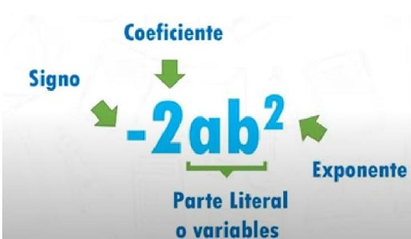
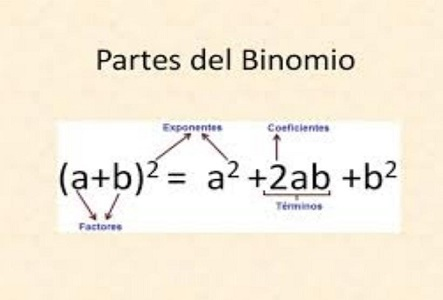
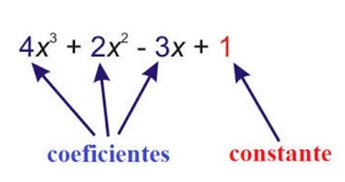

EJEMPLO DE MENÚ DESPLEGABLE
29 de mayo de 2023.
SEGUNDO PERIODO.
ALGEBRA
1. ¿Qué son los Monomios, los Binomios y los Polinomios?
Monomios.
Un monomio es una expresión algebraica en la que se utilizan incógnitas de variables literales que constan de un solo término, y un número llamado: “coeficiente”. Las únicas operaciones que aparecen entre las letras son el producto y la potencia de exponentes naturales.

Binomios.
Un binomio es una expresión algebraica formada por dos términos. Los binomios también se pueden definir como un polinomio formado por dos términos o monomios conectados mediante el operador matemático de suma (+) o resta (-).

Polinomios.
Los polinomios son los que están formados por términos finitos. Cada término es una expresión que contiene uno o más de los tres elementos de los que están hechos: variables, constantes o exponentes.

EXPLICACION EN VIDEO SOBRE LO ANTERIOR
2. ¿Cómo se suman, restan y multiplican los polinomios?
Suma.
Para realizar la suma de dos o más polinomios, se deben sumar los coeficientes de los términos cuya parte literal sean iguales, es decir, las variables y exponentes (o grados) deben ser los mismos en los términos a sumar.


EXPLICACION EN VIDEO
Resta.
La resta de polinomios consiste en sumar al minuendo el opuesto del sustraendo. También podemos restar polinomios escribiendo el opuesto de uno debajo del otro, de forma que los monomios semejantes queden en columnas y se puedan sumar.


EXPLICACION EN VIDEO
Multiplicación.
La multiplicación de dos polinomios se calcula multiplicando todos los monomios de uno de los polinomios (incluidos los signos) por todos los monomios del otro polinomio. Después, tenemos que simplificar el resultado sumando los monomios que tienen la misma parte literal.


EXPLICACION EN VIDEO